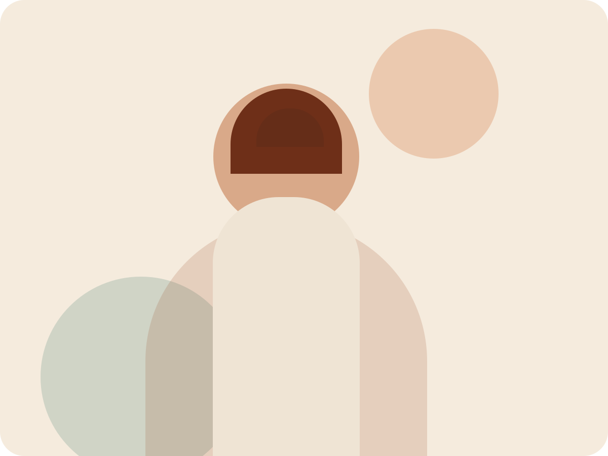

Tervetuloa
Tarinoita, japanilaista ruokaa ja lämmintä opetusta.
Rauhallinen ja lämmin paikka tutustua kirjoihin, ruokakursseihin ja tuleviin tapahtumiin.

Uusia ruokakursseja syksylle
Esittely
Tervehdys
Lisää tähän oma esittelysi: tausta, into japanilaiseen ruokaan, ja se mikä saa sinut opettamaan ja kirjoittamaan.
Kuvia